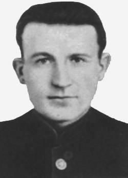

Фёдор Андреевич Крылович

Фёдор Андреевич Крыло́вич (23.03.1916, Минск, Российская империя — 07.11.1959, Осиповичи, Могилёвская область, БССР, СССР) — советский партизан, один из организаторов Осиповичского коммунистического подполья, руководитель партизанской диверсионной группы в годы Великой Отечественной в Белоруссии. Родился в семье Андрея Андреевича, работавшего в Минске железнодорожником, кондуктором поездов. Поступил в Витебский электротехникум, но из-за тяжелого материального положения учëбу бросил. Чтобы помочь семье, работал сразу в двух местах: электриком на железнодорожной электростанции в Осиповичах и одновременно помощником уполномоченного в городском отделе физкультуры и спорта. С 1937 по 1940 год служил в рядах РККА. Окончив школу связистов в Ульяновске, сержантом воевал на Халхин-Голе и у озера Хасан. Участник советско-финской войны (1939—1940). После демобилизации вернулся в Осиповичи. Остался электромонтёром и после прихода немцев, занявших 30 июня 1941 года город Осиповичи — узловую станцию, ставшую во время оккупации важной базой Вермахта. Здесь располагались склады, формировалось или разгружалось множество вражеских военных эшелонов. Уже в июле 1941 года Крылович наладил связь с партизанами, а в августе организовал в Осиповичах подпольную комсомольскую группу, которая влилась в состав Осиповичского коммунистического подполья. Диверсия Крыловича. Секретарь Могилёвского подпольного обкома ЛКСМБ, уполномоченный ЦК ЛКСМБ в зоне Осиповичи — Бобруйск Павел Воложин, из партизанского отряда «Храбрецы» НКВД БССР (руководитель — Александр Рабцевич), действовавшего тогда в Бобруйском и Осиповичском районах Белоруссии, весной 1943 года встретился с Фёдором Крыловичем и поручил ему расширить масштаб диверсий и акций саботажа на станции и в городе, взорвав эшелон с горючим в Могилёвском (Северном) вагонном парке станции Осиповичи. Чтобы получить доступ к эшелону, прибывавшему на станцию в ночь на 30 июля 1943 года, подпольщик повредил электропроводку входного светофора, а когда его вызвали для ремонта светофора, установил две магнитные мины на цистернах в начале и конце железнодорожного состава врага. В результате взрыва и возникшего после него пожара были уничтожены сразу четыре военных эшелона с боеприпасами и техникой: сгорели 63 вагона со снарядами, авиабомбами, танками «Тигр» и «Пантера», 23 платформы с бензином, 8 цистерн с автомаслом, 15 вагонов продовольствия, 5 паровозов, кран для подачи угля, угольный склад, станционные сооружения. Погибло около 50 фашистских солдат. В течение 10 часов над городом бушевало пламя. Испугавшись взрывов, разбежалась и охрана расположенного вблизи лагеря военнопленных, а заключённые ушли в лес к партизанам. Проведённая операция, известная как «Диверсия Крыловича», стала одной из крупнейших диверсий всей Второй мировой войны. В фундаментальном труде «История второй мировой войны 1939—1945» (Москва, 1976, том 7, с. 314) сказано: «…в ночь на 30 июля комсомолец-подпольщик Федор Крылович из оперативной группы „Храбрецы“ совершил на Могилевском железнодорожном узле крупную диверсию». После взрыва Фёдор Крылович ушёл из города в 1-ю Бобруйскую партизанскую бригаду, которой командовал В. И. Ливенцев. Возглавил в отряде диверсионную группу, совершил ряд успешных операций. Получил ряд ранений и контузий. За успешное проведение этой операции Фёдор Крылович был награждён орденом Ленина после войны, в 1949 году. Послевоенный период. После окончания войны с сентября 1945 года работал старшим электромонтёром на станции Осиповичи. Умер в 1959 году, не дождавшись признания его заслуг.
На главную